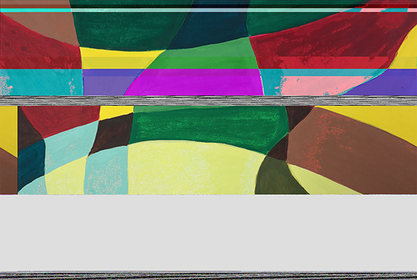

Hellooooo -- This is my digital art portfolio!
| Home |
Artist Statement |
Contact |
Glithc Art

My Night Coffee, 2018
I used project from my color and design class as my original image. It was color inventory of Van Gogh’s The Night Cafe. I chose this piece because I want to glitch an image which with hand drawing quarlity. My intention is to keep some of the original elements of my file and create a damage image. Then to create some digital mistakes on a hand drawing image because I want to explore combination of digital errors appearance and hand drawing quality.
Composite Art

Friendship in Travelling, 2018
I used project from my color and design class as my original image. It was color inventory of Van Gogh’s The Night Cafe. I chose this piece because I want to glitch an image which with hand drawing quarlity. My intention is to keep some of the original elements of my file and create a damage image. Then to create some digital mistakes on a hand drawing image because I want to explore combination of digital errors appearance and hand drawing quality.
Sound Art
Morning as Usual, 2018
Just like the name of the project, this is a typical morning of my school day. I start my day with a alarm, leave my residence with the start of enginee. In this short time period, I need to finish my personal caring, prepare my coffee and my breakfast. Then I will fall into disconnect with others. Most of the sound is recorded in a early morning, there is no one wake up yet in my residence. The cover is a drawing from my color and design class. Actually, it is a combination of 4 drawings of one image in 4 different color schemes. I chose it because I think it is a little bit similar to my current life that everyday is busy but with tiny difference.
Video Art
Pretty Ants, 2018
The idea of this project comes from a song called The Last Blossom. In Chinese, we have a specific nice word to describe it, however, I cannot translate that well. It basically talks about most beautiful moment of flowers is in their last blossom. After that, they would wither and fall quickly. It is a little bit sad. However, this is the rule of a lot objects, like fruits. Fruits always begin rotting right after they exuding the best taste. In the song, the lyrics I like best is: every ant is beautiful with very little tiny difference. From my perspective, I believe that every life is worth to respect without any consideration of appearance, like a withered flower or an old people. That is why I used ant in my video. In this project, I also tried to play with making ants crawled out of the screen because I create a illusion of realistic object with video presentation.
Net Art
Coogle Cannot be Found, 2018
My concept of this project is about error. When I first browed net art projects, the first impression came into my mind is that they were mistakes, they were not art. I felt it is interesting that those artworks were made by artists by purpose, however, they turned out like errors. It reminded me the glitch project. That is why I have my second and third page. The second page looks like a nonexistent page. Because I want to emphasis the error looking, I put a glitch image as a background image. The third page is a error code document but in handwritten text. My purpose is to convert digital document into physical appearance, I just feel it may be interesting. The homepage idea comes from the cheap copy products. In China, cheap copy products were popular in past. Cheap copy products usually are high quality copies but selt at a lower price. Most people are hard to recognize them at first, because they are produced only with little tiny difference. In some case, some customers purchase them because they don't realize that they are copy but not original. I feel this was an interesting economic phenomenon. It also reminded me what I learn in psychology class that people usually overestimate their perception. I think this is a funny idea to play with, then I made a "Coogle" homepage which is constructed by Google elements.
Code Art
Life Move with Train, 2018
My net art project based on my experience of travelling with caltrain in my first two month in United States. At that time, I need to go to San Francisco for school every Monday to Friday. Because I could not drive at that time, I choose caltrain to commute. During the travel time in caltrain, I always thought of the my days in China. Because of the time difference between two countries, when I finally got free from my school, it was late in China. I was hard to keep in touch with my friends in China. However, I still very appreciate this experience because it allows me to stay alone and get used to the life in US in a short time period.
Mix Digital Art
Weather is Bad Today, 2018
miss artwork description
Design Works